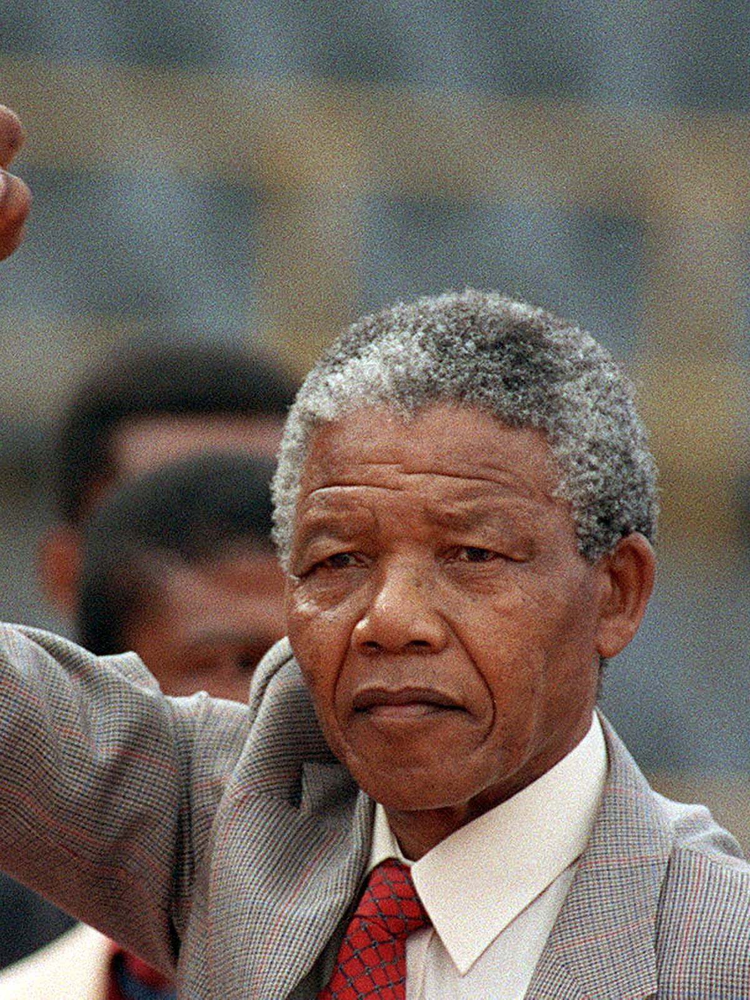

Nelson Mandela!

a South African anti-apartheid revolutionary political leader who
served as the first president of South Africa from 1994 to 1999.
Nelson Rolihlahla Mandela (born Rolihlahla Mandela /mænˈdɛlə/;[1] Xhosa: [xolíɬaɬa mandɛ̂ːla]; 18 July 1918 – 5 December 2013) was a South African anti-apartheid revolutionary political leader who served as the first president of South Africa from 1994 to 1999. He was the country's first black head of state and the first elected in a fully representative democratic election. His government focused on dismantling the legacy of apartheid by tackling institutionalised racism and fostering racial reconciliation. Ideologically an African nationalist and socialist, he served as the president of the African National Congress (ANC) party from 1991 to 1997. A Xhosa, Mandela was born into the Thembu royal family in Mvezo, Union of South Africa. He studied law at the University of Fort Hare and the University of Witwatersrand before working as a lawyer in Johannesburg. There he became involved in anti-colonial and African nationalist politics, joining the ANC in 1943 and co-founding its Youth League in 1944. After the National Party's white-only government established apartheid, a system of racial segregation that privileged whites, Mandela and the ANC committed themselves to its overthrow. He was appointed president of the ANC's Transvaal branch, rising to prominence for his involvement in the 1952 Defiance Campaign and the 1955 Congress of the People. He was repeatedly arrested for seditious activities and was unsuccessfully prosecuted in the 1956 Treason Trial. Although initially committed to non-violent protest, in association with the SACP he co-founded the militant uMkhonto we Sizwe in 1961 and led a sabotage campaign against the government. He was arrested and imprisoned in 1962, and, following the Rivonia Trial, was sentenced to life imprisonment for conspiring to overthrow the state.
If you have time, you should read more about this incredible human being on his Wikipedia entry.